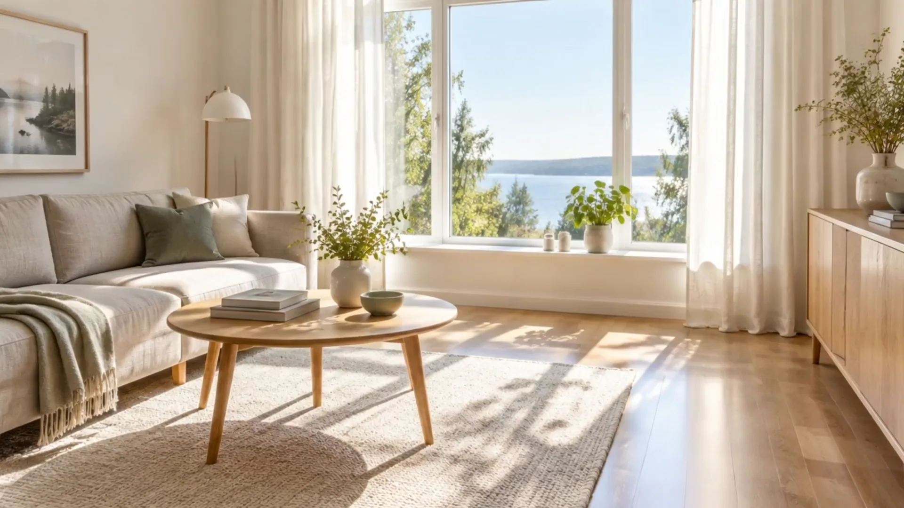
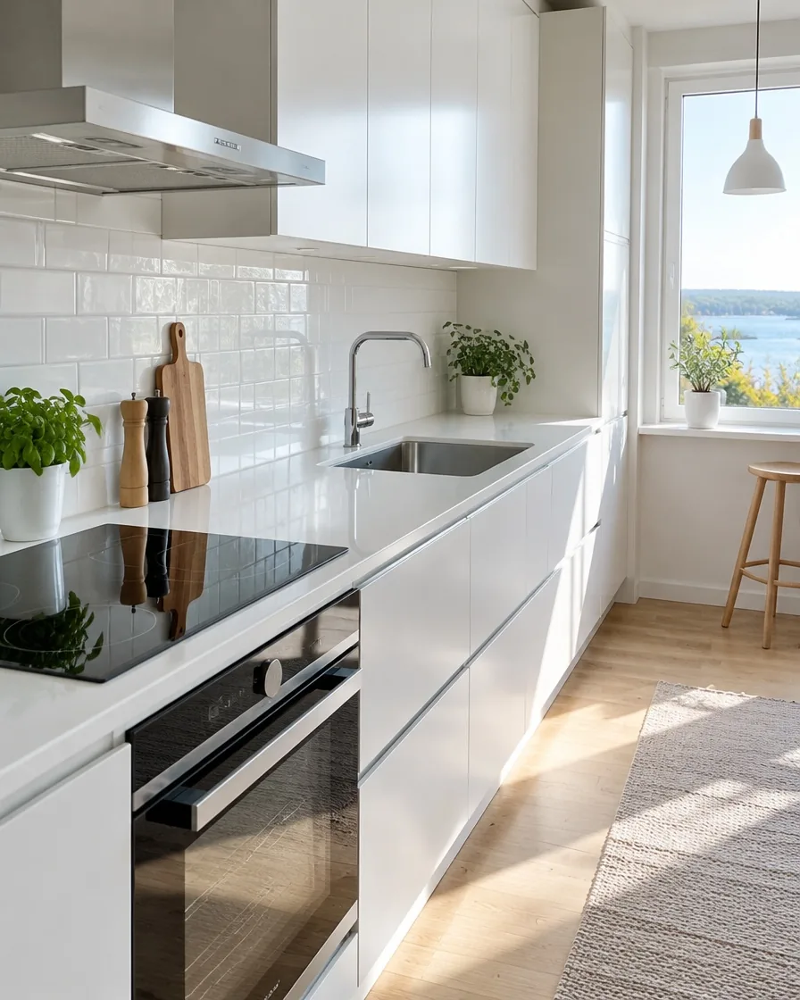
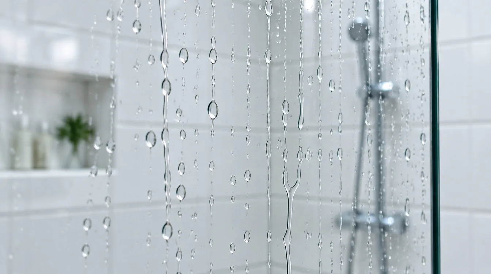
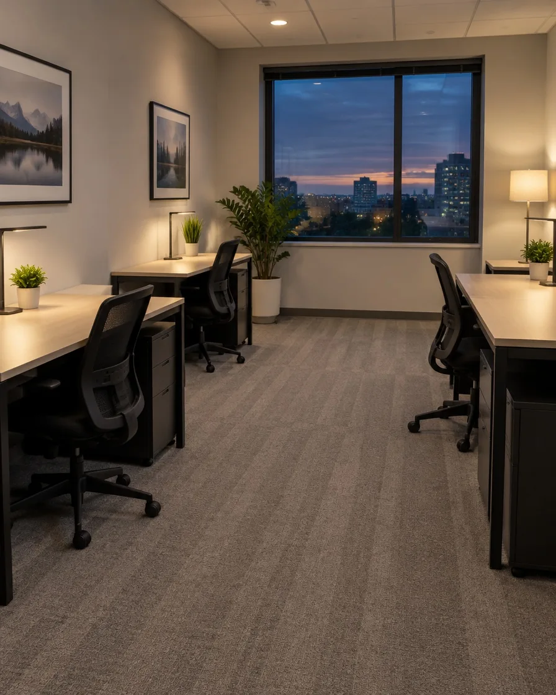
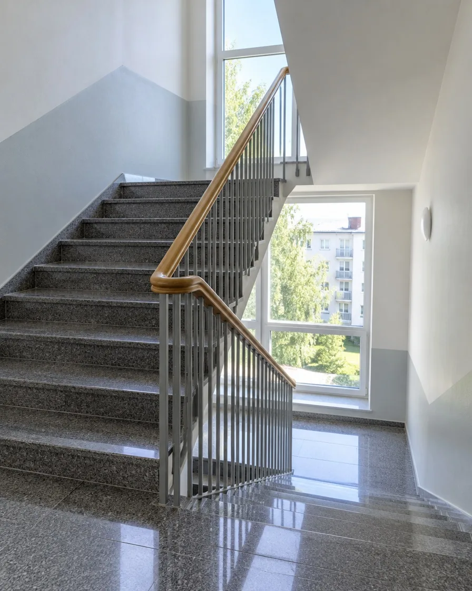
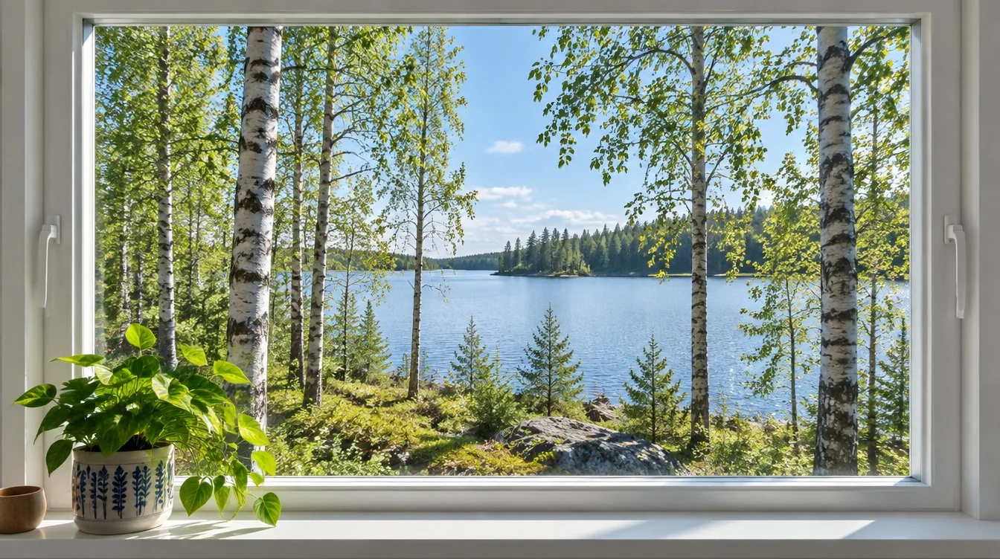
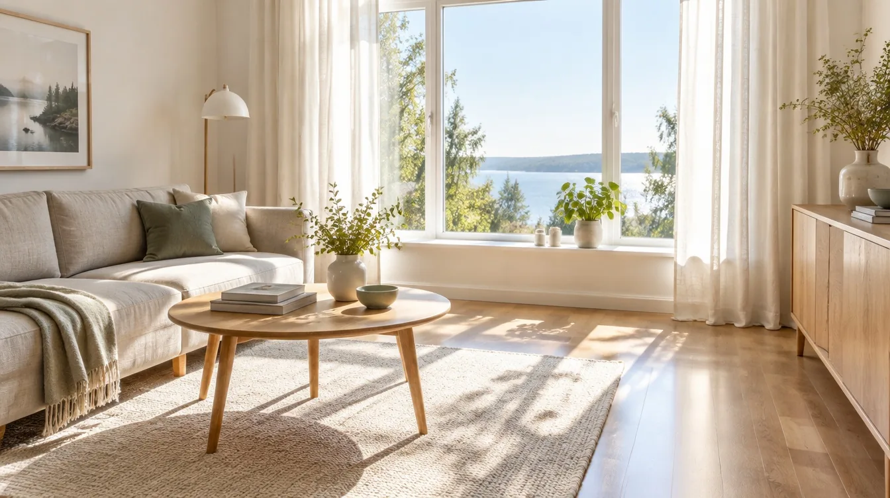
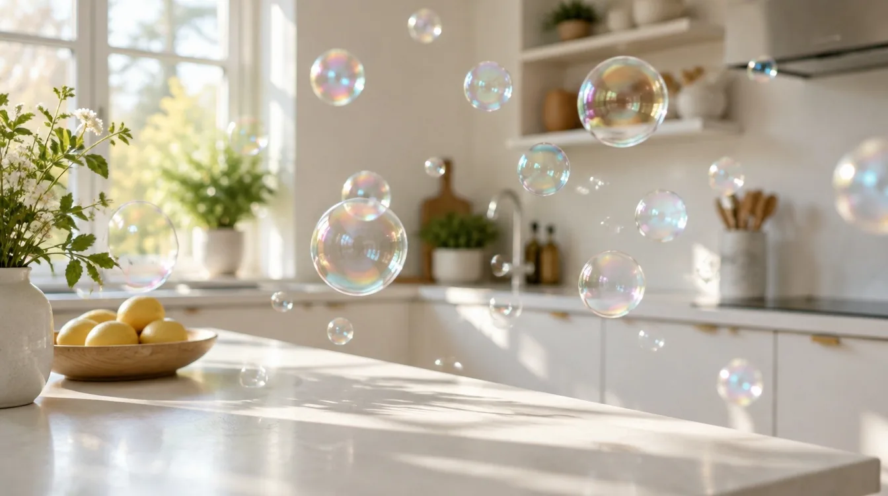

Siivouspalvelu Helsingissä
Puhdasta. Joka kerta.
Kotisiivous, pienet toimistot ja porraskäytävät. Sama tuttu siivooja, omat välineet ja hinta, jonka näet ennen kuin tilaat.
- Sama siivooja joka kerta
- Omat välineet ja aineet
- Ei määräaikaista sopimusta
Palvelut
Siivoamme sen, johon aikanne ei riitä.
Valitkaa säännöllinen siivous tai kertasiivous. Sovimme yhdessä, mitä tehdään ja kuinka usein, ja kirjaamme sen tehtävälistaan.
-

01Kotisiivous
Pölyt, pinnat, keittiö, kylpyhuone ja lattiat. Viikoittain, joka toinen viikko tai kerran kuussa.
-

02Ikkunat ja lasit
Ikkunat sisältä ja ulkoa, parvekelasit sekä suihkuseinät kalkista puhtaaksi.
-

03Toimistosiivous
Pienet toimistot ja liiketilat iltaisin tai aamuisin, kun työ ei häiriinny.
-

04Porrassiivous
Taloyhtiöiden porraskäytävät, kuramatot ja yhteiset tilat sovitulla rytmillä.
Kokeilkaa itse
Pyyhkikää ikkuna puhtaaksi.
Vetäkää sormella tai hiirellä lasin yli. Näin näkymä muuttuu, kun ikkunat pestään kunnolla, molemmin puolin ja raidattomasti.
Ikkuna odottaa pesua.

Ennen ja jälkeen
Ylhäältä alas, kuivasta märkään.
- Pölyt ylhäältä alasHyllyt, valaisimet ja tasot ensin, jotta pöly ei laskeudu jo siivotulle.
- Pinnat ja kodinkoneetTyötasot, liesi, hana ja kaappien ovet. Rasva irtoaa oikealla aineella.
- Lattiat viimeisenäImurointi ja kostea pyyhintä ovelle päin. Lopuksi tarkistamme tehtävälistan.
Siivouslaskuri
Mitä siivous maksaisi teille?
Arvio päivittyy heti. Kotitalousvähennys lasketaan vuoden 2026 säännöillä, ja siivouksessa koko lasku on työtä.
Suuntaa antava hinta / siivouskerta
0 €
noin 0 h, sis. alv 25,5 %
Kertasiivouksessa vähennyksen omavastuu 150 € ei vielä ylity, joten vähennystä ei synny. Säännöllisessä siivouksessa se ylittyy nopeasti.
Esimerkkihinnat: kertasiivous 58 €/h, joka toinen viikko 52 €/h, viikoittain 48 €/h. Kotitalousvähennys 40 % työn osuudesta, omavastuu 150 € ja enintään 2 100 € henkilöä kohden vuodessa (vero.fi, tilanne 2026). Vähennys riippuu myös muista samana vuonna teetetyistä töistä.


Näin toimimme
Neljä askelta puhtaaseen kotiin.
- 1
Yhteydenotto
Kertokaa kodin koko ja toiveet puhelimessa tai lomakkeella.
- 2
Tutustumiskäynti
Käymme paikan päällä maksutta ja sovimme tehtävälistan yhdessä.
- 3
Ensimmäinen siivous
Sama siivooja tulee sovittuna päivänä omien välineidensä kanssa.
- 4
Palaute ja rytmi
Hiomme listaa tarpeen mukaan. Sopimuksen voi päättää milloin vain.
Esimerkkikohteita
Millaisia siivouksia teemme.
Esimerkit ovat tyypillisiä kohteita. Tarkka aika ja hinta sovitaan aina kohteen mukaan.
- Koti
Kerrostalokaksio
55 m², joka toinen viikko
noin 2,5 h / kerta - Koti
Paritalo ja lapsiperhe
120 m², viikoittain, ikkunat keväällä
noin 4,5 h / kerta - Toimisto
Kuuden hengen toimisto
140 m², kahdesti viikossa iltaisin
noin 2 h / kerta - Taloyhtiö
Porraskäytävät
3 rappua, kerran viikossa
noin 3 h / viikko
Kysyttyä
Usein kysytyt kysymykset.
Tarvitseeko minun olla kotona siivouksen aikana?
Ei tarvitse. Moni asiakas antaa avaimen tai ovikoodin, jota säilytämme lukitussa kaapissa. Voitte myös olla kotona, jos se tuntuu paremmalta.
Tuotteko omat siivousvälineet ja -aineet?
Tuomme. Käytämme ympäristöä säästäviä aineita ja mikrokuituliinoja. Jos haluatte meidän käyttävän omia aineitanne, sekin sopii.
Miten kotitalousvähennys toimii siivouksessa?
Siivouksessa koko laskun summa on työtä. Vuonna 2026 vähennys on 40 % työn osuudesta, omavastuu on 150 € ja enimmäismäärä 2 100 € henkilöä kohden. Vähennyksen haette itse OmaVerossa.
Voiko siivouksen perua tai siirtää?
Voi. Kertokaa muutoksesta viimeistään edellisenä arkipäivänä, niin sovimme uuden ajan.
Siivoatteko myös muuton jälkeen?
Kyllä. Muuttosiivous sisältää myös kaappien sisäpinnat, uunin ja jääkaapin. Pyytäkää siitä erillinen tarjous.
Yhteystiedot
Kertokaa, mitä kotinne tarvitsee.
Vastaamme arkisin vuorokauden sisällä. Tutustumiskäynti on maksuton.
- Puhelin050 412 7788
- Sähköpostihei@raikas.fi
- ToimialueHelsinki ja lähialueet